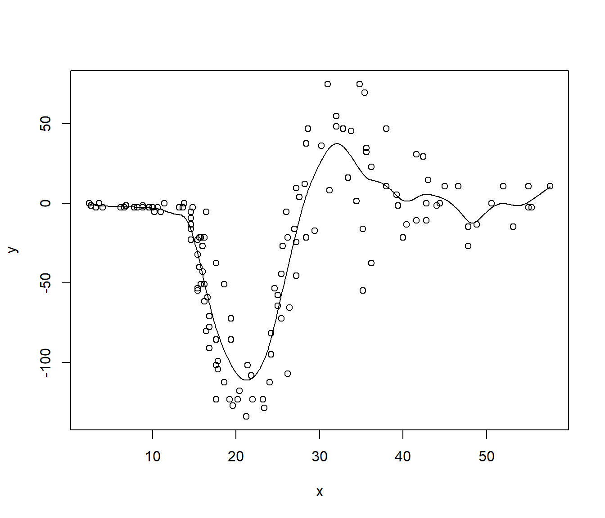

7.3 Regresión polinómica local en R
El estimador de Nadaraya-Watson de \(m(x)\) descrito en la Sección 7.1 es un caso particular de una clase más amplia de estimadores no paramétricos, denominados estimadores polinómicos locales.
En el caso univariante, para cada \(x_0\) se ajusta un polinomio: \[\beta_0+\beta_{1}\left(x - x_0\right) + \cdots + \beta_{p}\left( x-x_0\right)^{p}\] por mínimos cuadrados ponderados, con pesos \(w_{i} = \frac{1}{h}K\left(\frac{x-x_0}{h}\right)\).
La estimación en \(x_0\) es \(\hat{m}_{h}(x_0)=\hat{\beta}_0\).
Adicionalmente8: \(\widehat{m_{h}^{(r)}}(x_0) = r!\hat{\beta}_{r}\).
Por tanto, la estimación lineal local \(\hat{m}_{h}(x)=\hat{\beta}_0\) se obtiene al minimizar: \[\begin{aligned} \min_{\beta_0 ,\beta_1, \ldots, \beta_p} \sum_{i=1}^{n}\left\{ Y_{i} - \beta_0 -\beta_1(x - X_i) - \ldots \right. \nonumber \\ \left. -\beta_p(x - X_i)^p \right\}^{2} K_{h}(x - X_i). \end{aligned}\]
Explícitamente: \[\hat{m}_{h}(x) = \mathbf{e}_{1}^{T} \left( X_{x}^{T} {W}_{x} X_{x} \right)^{-1} X_{x}^{T} {W}_{x}\mathbf{Y} \equiv {s}_{x}^{T}\mathbf{Y},\] donde \(\mathbf{e}_{1} = \left( 1, \cdots, 0\right)^{T}\), \(X_{x}\) es la matriz con \((1,x - X_i, \ldots, (x - X_i)^p)\) en la fila \(i\), \(W_{x} = \mathtt{diag} \left( K_{h}(x_{1} - x), \ldots, K_{h}(x_{n} - x) \right)\) es la matriz de pesos, e \(\mathbf{Y} = \left( Y_1, \cdots, Y_n\right)^{T}\) es el vector de observaciones de la respuesta.
Se puede pensar que se obtiene aplicando un suavizado polinómico a \((X_i, Y_i)\): \[\hat{\boldsymbol{m}} = S\mathbf{Y},\] siendo \(S\) la matriz de suavizado con \(\mathbf{s}_{X_{i}}^{T}\) en la fila \(i\).
Habitualmente se considera:
\(p=0\): Estimador Nadaraya-Watson.
\(p=1\): Estimador lineal local.
Asintóticamente el estimador lineal local tiene un sesgo menor que el de Nadaraya-Watson (pero del mismo orden) y la misma varianza (e.g. Fan and Gijbels, 1996). Sin embargo, su principal ventaja es que se ve menos afectado por el denominado efecto frontera (edge effect).
Aunque el paquete base de R incluye herramientas para la estimación tipo núcleo de la regresión (lowess(), ksmooth()), recomiendan el uso del paquete KernSmooth (Wand y Ripley, 2019). Otros paquetes incluyen más funcionalidades: sm (Bowman y Azzalini, 2019), np (Tristen y Jeffrey, 2019), npsp (Fernández-Casal, 2019), entre otros.
Como ejemplo emplearemos el conjunto de datos MASS::mcycle que contiene mediciones de la aceleración de la cabeza en una simulación de un accidente de motocicleta, utilizado para probar cascos protectores.
data(mcycle, package = "MASS")
x <- mcycle$times
y <- mcycle$accel
library(KernSmooth)
h <- dpill(x, y) # Método plug-in de Ruppert, Sheather y Wand (1995)
fit <- locpoly(x, y, bandwidth = h) # Estimación lineal local
plot(x, y)
lines(fit)
Hay que tener en cuenta que el paquete KernSmooth no implementa los métodos predict() y residuals():
est <- approx(fit, xout = x)$y # est <- predict(fit)
resid <- y - est # resid <- residuals(fit)Tampoco calcula medidas de bondad de ajuste, aunque podríamos obtener fácilmente un (pseudo) R-cuadrado:
r.squared <- 1 - sum(resid^2)/sum((y - mean(y))^2)
r.squared## [1] 0.80154297.3.1 Estimación de la varianza
En el caso heterocedástico, se puede obtener una estimación de la varianza \(\sigma^2(x)\) mediante suavizado local de los residuos al cuadrado (Fan y Yao, 1998). Mientras que en el caso homocedástico, se puede obtener una estimación de la varianza a partir de la suma de cuadrados residual y la matriz de suavizado: \[\hat\sigma^2 = \frac{RSS}{df_e},\] siendo \(RSS=\Sigma_{i=1}^n \left( Y_i - \hat m(X_i) \right)^2\) y \(df_e = tr(I - S)\) (de forma análoga al caso lineal), o alternativamente \(df_e = tr \left( (I - S^{T})(I - S)\right)\), es una aproximación de los grados de libertad del error.
Adicionalmente: \[\widehat{Var}\left(\hat{m}_{h}(x_i)\right) = \hat\sigma^2\sum_{j=1}^n s^2_{ij}\]
Uno de los pocos paquetes de R que implementan la estimación de la varianza y el cálculo de intervalos de confianza es el paquete9 sm (Bowman y Azzalini, 2019).
library(sm)
hcv <- hcv(x, y) # Método de validación cruzada
fit.sm <- sm.regression(x, y, h = hcv, display = "se")
fit.sm$sigma## [1] 22.82508Alternativamente se podría emplear bootstrap.